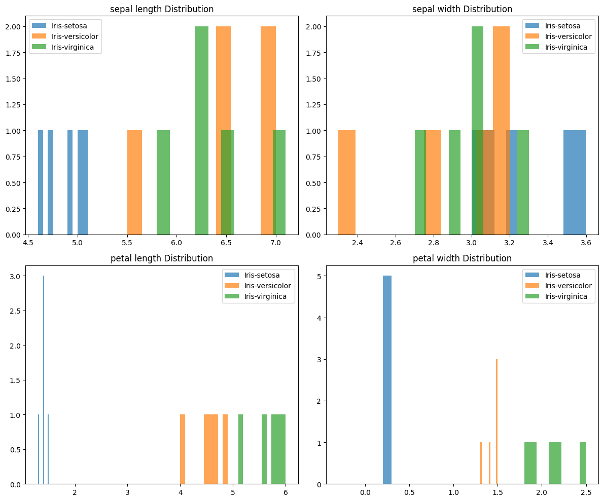
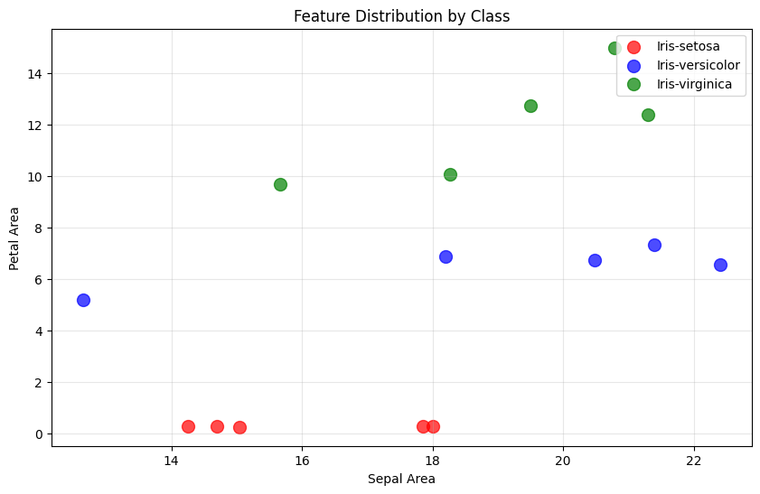
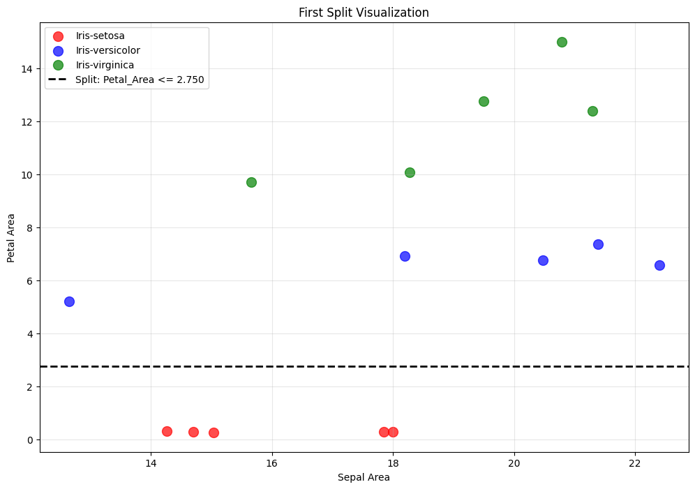
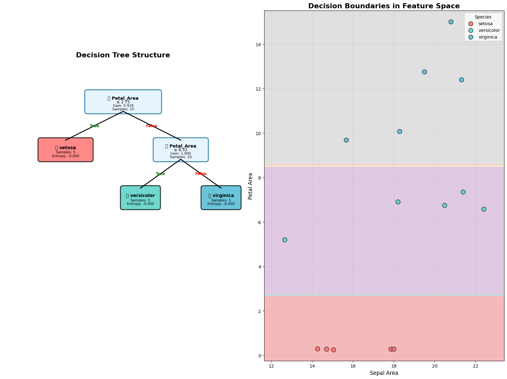

Decision Tree#
Fitur1 |
Fitur2 |
|---|---|
14.70 |
0.28 |
14.70 |
0.28 |
15.04 |
0.26 |
14.26 |
0.30 |
18.00 |
0.28 |
22.40 |
6.58 |
20.48 |
6.75 |
21.39 |
7.35 |
12.65 |
5.20 |
18.20 |
6.90 |
20.79 |
15.00 |
15.66 |
9.69 |
21.30 |
12.39 |
18.27 |
10.08 |
19.50 |
12.78 |
Business Understanding#
Define objective: Memahami decision tree dan information gain secara manual
Success criteria: Akurasi perhitungan manual vs sklearn
Data Understanding#
Load dan explore dataset Iris#
import pandas as pd
import numpy as np
df_mysql = pd.read_csv("data/iris_mysql.csv")
df_postgre = pd.read_csv("data/iris-postgre.csv")
df_combined = pd.merge(df_postgre, df_mysql[['id', 'petal length', 'petal width']], on='id')
df_combined.info()
<class 'pandas.core.frame.DataFrame'>
RangeIndex: 150 entries, 0 to 149
Data columns (total 6 columns):
# Column Non-Null Count Dtype
--- ------ -------------- -----
0 id 150 non-null int64
1 Class 150 non-null object
2 sepal length 150 non-null float64
3 sepal width 150 non-null float64
4 petal length 150 non-null float64
5 petal width 150 non-null float64
dtypes: float64(4), int64(1), object(1)
memory usage: 7.2+ KB
selected_data = []
for class_name, group in df_combined.groupby("Class"):
class_data = group.head(5)
selected_data.append(class_data)
print(f"\nClass: {class_name}")
print(class_data)
# Gabungkan semua data
final_dataset = pd.concat(selected_data, ignore_index=True)
Class: Iris-setosa
id Class sepal length sepal width petal length petal width
0 1 Iris-setosa 5.1 3.5 1.4 0.2
1 2 Iris-setosa 4.9 3.0 1.4 0.2
2 3 Iris-setosa 4.7 3.2 1.3 0.2
3 4 Iris-setosa 4.6 3.1 1.5 0.2
4 5 Iris-setosa 5.0 3.6 1.4 0.2
Class: Iris-versicolor
id Class sepal length sepal width petal length petal width
50 51 Iris-versicolor 7.0 3.2 4.7 1.4
51 52 Iris-versicolor 6.4 3.2 4.5 1.5
52 53 Iris-versicolor 6.9 3.1 4.9 1.5
53 54 Iris-versicolor 5.5 2.3 4.0 1.3
54 55 Iris-versicolor 6.5 2.8 4.6 1.5
Class: Iris-virginica
id Class sepal length sepal width petal length petal width
100 101 Iris-virginica 6.3 3.3 6.0 2.5
101 102 Iris-virginica 5.8 2.7 5.1 1.9
102 103 Iris-virginica 7.1 3.0 5.9 2.1
103 104 Iris-virginica 6.3 2.9 5.6 1.8
104 105 Iris-virginica 6.5 3.0 5.8 2.2
final_dataset.to_csv('decisiontree.csv', index=False)
print("Dataset Final:")
print(f"Shape: {final_dataset.shape}")
print(f"\nDistribusi kelas:")
print(final_dataset['Class'].value_counts())
Dataset Final:
Shape: (15, 6)
Distribusi kelas:
Class
Iris-setosa 5
Iris-versicolor 5
Iris-virginica 5
Name: count, dtype: int64
Analisis distribusi kelas dan fitur#
print(f"\nDataset lengkap:")
final_dataset
Dataset lengkap:
| id | Class | sepal length | sepal width | petal length | petal width | |
|---|---|---|---|---|---|---|
| 0 | 1 | Iris-setosa | 5.1 | 3.5 | 1.4 | 0.2 |
| 1 | 2 | Iris-setosa | 4.9 | 3.0 | 1.4 | 0.2 |
| 2 | 3 | Iris-setosa | 4.7 | 3.2 | 1.3 | 0.2 |
| 3 | 4 | Iris-setosa | 4.6 | 3.1 | 1.5 | 0.2 |
| 4 | 5 | Iris-setosa | 5.0 | 3.6 | 1.4 | 0.2 |
| 5 | 51 | Iris-versicolor | 7.0 | 3.2 | 4.7 | 1.4 |
| 6 | 52 | Iris-versicolor | 6.4 | 3.2 | 4.5 | 1.5 |
| 7 | 53 | Iris-versicolor | 6.9 | 3.1 | 4.9 | 1.5 |
| 8 | 54 | Iris-versicolor | 5.5 | 2.3 | 4.0 | 1.3 |
| 9 | 55 | Iris-versicolor | 6.5 | 2.8 | 4.6 | 1.5 |
| 10 | 101 | Iris-virginica | 6.3 | 3.3 | 6.0 | 2.5 |
| 11 | 102 | Iris-virginica | 5.8 | 2.7 | 5.1 | 1.9 |
| 12 | 103 | Iris-virginica | 7.1 | 3.0 | 5.9 | 2.1 |
| 13 | 104 | Iris-virginica | 6.3 | 2.9 | 5.6 | 1.8 |
| 14 | 105 | Iris-virginica | 6.5 | 3.0 | 5.8 | 2.2 |
Visualisasi data untuk understanding#
import matplotlib.pyplot as plt
import seaborn as sns
# Visualisasi distribusi fitur per kelas
fig, axes = plt.subplots(2, 2, figsize=(12, 10))
features = ['sepal length', 'sepal width', 'petal length', 'petal width']
for i, feature in enumerate(features):
row, col = i//2, i%2
for class_name in final_dataset['Class'].unique():
class_data = final_dataset[final_dataset['Class'] == class_name]
axes[row, col].hist(class_data[feature], alpha=0.7, label=class_name)
axes[row, col].set_title(f'{feature} Distribution')
axes[row, col].legend()
plt.tight_layout()
plt.show()

Data Preparation#
Load Dataset untuk Processing#
df = pd.read_csv('decisiontree.csv')
df.head()
| id | Class | sepal length | sepal width | petal length | petal width | |
|---|---|---|---|---|---|---|
| 0 | 1 | Iris-setosa | 5.1 | 3.5 | 1.4 | 0.2 |
| 1 | 2 | Iris-setosa | 4.9 | 3.0 | 1.4 | 0.2 |
| 2 | 3 | Iris-setosa | 4.7 | 3.2 | 1.3 | 0.2 |
| 3 | 4 | Iris-setosa | 4.6 | 3.1 | 1.5 | 0.2 |
| 4 | 5 | Iris-setosa | 5.0 | 3.6 | 1.4 | 0.2 |
Feature Engineering#
# Feature Engineering: Buat area features
df['Sepal_Area'] = df['sepal length'] * df['sepal width']
df['Petal_Area'] = df['petal length'] * df['petal width']
# Lihat hasil feature engineering
print("Dataset dengan feature baru:")
df[['Class', 'sepal length', 'sepal width', 'Sepal_Area',
'petal length', 'petal width', 'Petal_Area']].head(15)
Dataset dengan feature baru:
| Class | sepal length | sepal width | Sepal_Area | petal length | petal width | Petal_Area | |
|---|---|---|---|---|---|---|---|
| 0 | Iris-setosa | 5.1 | 3.5 | 17.85 | 1.4 | 0.2 | 0.28 |
| 1 | Iris-setosa | 4.9 | 3.0 | 14.70 | 1.4 | 0.2 | 0.28 |
| 2 | Iris-setosa | 4.7 | 3.2 | 15.04 | 1.3 | 0.2 | 0.26 |
| 3 | Iris-setosa | 4.6 | 3.1 | 14.26 | 1.5 | 0.2 | 0.30 |
| 4 | Iris-setosa | 5.0 | 3.6 | 18.00 | 1.4 | 0.2 | 0.28 |
| 5 | Iris-versicolor | 7.0 | 3.2 | 22.40 | 4.7 | 1.4 | 6.58 |
| 6 | Iris-versicolor | 6.4 | 3.2 | 20.48 | 4.5 | 1.5 | 6.75 |
| 7 | Iris-versicolor | 6.9 | 3.1 | 21.39 | 4.9 | 1.5 | 7.35 |
| 8 | Iris-versicolor | 5.5 | 2.3 | 12.65 | 4.0 | 1.3 | 5.20 |
| 9 | Iris-versicolor | 6.5 | 2.8 | 18.20 | 4.6 | 1.5 | 6.90 |
| 10 | Iris-virginica | 6.3 | 3.3 | 20.79 | 6.0 | 2.5 | 15.00 |
| 11 | Iris-virginica | 5.8 | 2.7 | 15.66 | 5.1 | 1.9 | 9.69 |
| 12 | Iris-virginica | 7.1 | 3.0 | 21.30 | 5.9 | 2.1 | 12.39 |
| 13 | Iris-virginica | 6.3 | 2.9 | 18.27 | 5.6 | 1.8 | 10.08 |
| 14 | Iris-virginica | 6.5 | 3.0 | 19.50 | 5.8 | 2.2 | 12.76 |
area_only = df[['id', 'Sepal_Area', 'Petal_Area']]
area_only.to_json('area_features.json', orient='records', indent=4)
Prepare Final Dataset#
# Simpan target class terpisah (untuk evaluasi nanti)
target = df['Class'].copy()
# Buat dataset final dengan hanya 2 fitur area
features = df[['Sepal_Area', 'Petal_Area']].copy()
print("Target classes:")
print(target.value_counts())
print("\nFeatures untuk Decision Tree:")
print(features.head())
print(f"\nShape features: {features.shape}")
Target classes:
Class
Iris-setosa 5
Iris-versicolor 5
Iris-virginica 5
Name: count, dtype: int64
Features untuk Decision Tree:
Sepal_Area Petal_Area
0 17.85 0.28
1 14.70 0.28
2 15.04 0.26
3 14.26 0.30
4 18.00 0.28
Shape features: (15, 2)
Data Summary#
# Summary statistics untuk features
print("Summary Statistics:")
print(features.describe())
print("\nRange values per feature:")
print(f"Sepal_Area: {features['Sepal_Area'].min():.2f} - {features['Sepal_Area'].max():.2f}")
print(f"Petal_Area: {features['Petal_Area'].min():.2f} - {features['Petal_Area'].max():.2f}")
print("\nData quality check:")
print(f"Missing values: {features.isnull().sum().sum()}")
print(f"Total samples: {len(features)}")
Summary Statistics:
Sepal_Area Petal_Area
count 15.000000 15.000000
mean 18.032667 6.273333
std 2.997419 5.102071
min 12.650000 0.260000
25% 15.350000 0.290000
50% 18.200000 6.750000
75% 20.635000 9.885000
max 22.400000 15.000000
Range values per feature:
Sepal_Area: 12.65 - 22.40
Petal_Area: 0.26 - 15.00
Data quality check:
Missing values: 0
Total samples: 15
Visualisasi Features vs Target#
# Scatter plot untuk melihat separability
plt.figure(figsize=(10, 6))
colors = {'Iris-setosa': 'red', 'Iris-versicolor': 'blue', 'Iris-virginica': 'green'}
for class_name in target.unique():
mask = target == class_name
plt.scatter(features[mask]['Sepal_Area'], features[mask]['Petal_Area'],
c=colors[class_name], label=class_name, alpha=0.7, s=100)
plt.xlabel('Sepal Area')
plt.ylabel('Petal Area')
plt.title('Feature Distribution by Class')
plt.legend()
plt.grid(True, alpha=0.3)
plt.show()

Modeling#
Manual Decision Tree#
import numpy as np
import pandas as pd
from collections import Counter
import math
# Function untuk menghitung entropy
def calculate_entropy(y):
"""
Menghitung entropy dari sebuah array target
"""
if len(y) == 0:
return 0
# Hitung proporsi setiap kelas
proportions = np.bincount(y) / len(y)
# Filter out zero proportions
proportions = proportions[proportions > 0]
# Hitung entropy
entropy = -np.sum(proportions * np.log2(proportions))
return entropy
# Test function
print("Testing entropy function:")
test_target = [0, 0, 1, 1, 1, 2] # Mixed classes
print(f"Entropy of mixed classes: {calculate_entropy(test_target):.4f}")
Testing entropy function:
Entropy of mixed classes: 1.4591
Hitung Entropy Awal Dataset#
# Convert target ke numeric untuk perhitungan
target_numeric = pd.Categorical(target).codes
class_mapping = {code: class_name for code, class_name in
enumerate(pd.Categorical(target).categories)}
print("Class mapping:")
for code, name in class_mapping.items():
print(f"{code}: {name}")
# Hitung entropy awal
initial_entropy = calculate_entropy(target_numeric)
print(f"\nInitial Entropy: {initial_entropy:.4f}")
# Distribusi kelas
print(f"\nClass distribution:")
for code, name in class_mapping.items():
count = np.sum(target_numeric == code)
proportion = count / len(target_numeric)
print(f"{name}: {count} samples ({proportion:.3f})")
Class mapping:
0: Iris-setosa
1: Iris-versicolor
2: Iris-virginica
Initial Entropy: 1.5850
Class distribution:
Iris-setosa: 5 samples (0.333)
Iris-versicolor: 5 samples (0.333)
Iris-virginica: 5 samples (0.333)
Function untuk Information Gain#
def calculate_information_gain(X, y, feature_idx, threshold):
"""
Menghitung information gain untuk split tertentu
"""
# Split data berdasarkan threshold
left_mask = X.iloc[:, feature_idx] <= threshold
right_mask = ~left_mask
# Jika salah satu split kosong, return 0
if np.sum(left_mask) == 0 or np.sum(right_mask) == 0:
return 0
# Hitung entropy sebelum split
parent_entropy = calculate_entropy(y)
# Hitung entropy setelah split
left_entropy = calculate_entropy(y[left_mask])
right_entropy = calculate_entropy(y[right_mask])
# Hitung weighted entropy
n_left = np.sum(left_mask)
n_right = np.sum(right_mask)
n_total = len(y)
weighted_entropy = (n_left/n_total) * left_entropy + (n_right/n_total) * right_entropy
# Information gain
info_gain = parent_entropy - weighted_entropy
return info_gain
print("Information Gain function ready!")
Information Gain function ready!
Cari Best Split untuk Setiap Feature#
def find_best_split(X, y):
"""
Mencari split terbaik dari semua possible splits
"""
best_gain = -1
best_feature = None
best_threshold = None
best_split_info = {}
for feature_idx in range(X.shape[1]):
feature_name = X.columns[feature_idx]
feature_values = X.iloc[:, feature_idx].unique()
print(f"\nAnalyzing feature: {feature_name}")
print(f"Unique values: {sorted(feature_values)}")
# Test berbagai threshold (midpoint between consecutive values)
thresholds = []
sorted_values = sorted(feature_values)
for i in range(len(sorted_values)-1):
threshold = (sorted_values[i] + sorted_values[i+1]) / 2
thresholds.append(threshold)
feature_gains = []
for threshold in thresholds:
gain = calculate_information_gain(X, y, feature_idx, threshold)
feature_gains.append((threshold, gain))
print(f" Threshold {threshold:.3f}: Info Gain = {gain:.4f}")
# Find best threshold for this feature
if feature_gains:
best_threshold_feature = max(feature_gains, key=lambda x: x[1])
if best_threshold_feature[1] > best_gain:
best_gain = best_threshold_feature[1]
best_feature = feature_idx
best_threshold = best_threshold_feature[0]
best_split_info = {
'feature_name': feature_name,
'feature_idx': feature_idx,
'threshold': best_threshold,
'info_gain': best_gain
}
return best_split_info
# Cari best split untuk root node
print("Finding best split for root node:")
print("="*50)
best_split = find_best_split(features, target_numeric)
print(f"\n🎯 BEST SPLIT:")
print(f"Feature: {best_split['feature_name']}")
print(f"Threshold: {best_split['threshold']:.3f}")
print(f"Information Gain: {best_split['info_gain']:.4f}")
Finding best split for root node:
==================================================
Analyzing feature: Sepal_Area
Unique values: [np.float64(12.649999999999999), np.float64(14.26), np.float64(14.700000000000001), np.float64(15.040000000000001), np.float64(15.66), np.float64(17.849999999999998), np.float64(18.0), np.float64(18.2), np.float64(18.27), np.float64(19.5), np.float64(20.480000000000004), np.float64(20.79), np.float64(21.299999999999997), np.float64(21.39), np.float64(22.400000000000002)]
Threshold 13.455: Info Gain = 0.1127
Threshold 14.480: Info Gain = 0.0852
Threshold 14.870: Info Gain = 0.1576
Threshold 15.350: Info Gain = 0.2723
Threshold 16.755: Info Gain = 0.1134
Threshold 17.925: Info Gain = 0.2490
Threshold 18.100: Info Gain = 0.5155
Threshold 18.235: Info Gain = 0.4325
Threshold 18.885: Info Gain = 0.3237
Threshold 19.990: Info Gain = 0.2710
Threshold 20.635: Info Gain = 0.1893
Threshold 21.045: Info Gain = 0.1576
Threshold 21.345: Info Gain = 0.2429
Threshold 21.895: Info Gain = 0.1127
Analyzing feature: Petal_Area
Unique values: [np.float64(0.26), np.float64(0.27999999999999997), np.float64(0.30000000000000004), np.float64(5.2), np.float64(6.58), np.float64(6.75), np.float64(6.8999999999999995), np.float64(7.3500000000000005), np.float64(9.69), np.float64(10.08), np.float64(12.39), np.float64(12.76), np.float64(15.0)]
Threshold 0.270: Info Gain = 0.1127
Threshold 0.290: Info Gain = 0.5960
Threshold 2.750: Info Gain = 0.9183
Threshold 5.890: Info Gain = 0.7303
Threshold 6.665: Info Gain = 0.6731
Threshold 6.825: Info Gain = 0.6731
Threshold 7.125: Info Gain = 0.7303
Threshold 8.520: Info Gain = 0.9183
Threshold 9.885: Info Gain = 0.5960
Threshold 11.235: Info Gain = 0.3983
Threshold 12.575: Info Gain = 0.2429
Threshold 13.880: Info Gain = 0.1127
🎯 BEST SPLIT:
Feature: Petal_Area
Threshold: 2.750
Information Gain: 0.9183
Review dan Validasi Split Pertama#
# Ambil informasi best split
feature_name = best_split['feature_name']
threshold = best_split['threshold']
feature_idx = best_split['feature_idx']
print("🔍 DETAILED ANALYSIS OF BEST SPLIT")
print("="*60)
print(f"Split: {feature_name} <= {threshold:.3f}")
# Buat split berdasarkan threshold terbaik
left_mask = features.iloc[:, feature_idx] <= threshold
right_mask = ~left_mask
print(f"\nSplit Results:")
print(f"Left branch: {np.sum(left_mask)} samples")
print(f"Right branch: {np.sum(right_mask)} samples")
# Analisis distribusi kelas di setiap branch
print(f"\n📊 Class Distribution in Each Branch:")
print("-" * 40)
print("LEFT BRANCH (", f"{feature_name} <= {threshold:.3f}", "):")
left_classes = target_numeric[left_mask]
for code, name in class_mapping.items():
count = np.sum(left_classes == code)
if count > 0:
print(f" {name}: {count} samples")
print(f"\nRIGHT BRANCH (", f"{feature_name} > {threshold:.3f}", "):")
right_classes = target_numeric[right_mask]
for code, name in class_mapping.items():
count = np.sum(right_classes == code)
if count > 0:
print(f" {name}: {count} samples")
# Manual verification of information gain calculation
print(f"\n🧮 MANUAL CALCULATION VERIFICATION:")
print("-" * 40)
initial_entropy = calculate_entropy(target_numeric)
left_entropy = calculate_entropy(left_classes)
right_entropy = calculate_entropy(right_classes)
print(f"Initial entropy: {initial_entropy:.4f}")
print(f"Left entropy: {left_entropy:.4f}")
print(f"Right entropy: {right_entropy:.4f}")
# Weighted average entropy
n_left, n_right = len(left_classes), len(right_classes)
n_total = len(target_numeric)
weighted_entropy = (n_left/n_total) * left_entropy + (n_right/n_total) * right_entropy
info_gain = initial_entropy - weighted_entropy
print(f"Weighted entropy: {weighted_entropy:.4f}")
print(f"Information gain: {info_gain:.4f}")
print(f"Matches calculated: {abs(info_gain - best_split['info_gain']) < 0.0001}")
🔍 DETAILED ANALYSIS OF BEST SPLIT
============================================================
Split: Petal_Area <= 2.750
Split Results:
Left branch: 5 samples
Right branch: 10 samples
📊 Class Distribution in Each Branch:
----------------------------------------
LEFT BRANCH ( Petal_Area <= 2.750 ):
Iris-setosa: 5 samples
RIGHT BRANCH ( Petal_Area > 2.750 ):
Iris-versicolor: 5 samples
Iris-virginica: 5 samples
🧮 MANUAL CALCULATION VERIFICATION:
----------------------------------------
Initial entropy: 1.5850
Left entropy: -0.0000
Right entropy: 1.0000
Weighted entropy: 0.6667
Information gain: 0.9183
Matches calculated: True
Visualisasi Split Pertama#
# Visualisasi hasil split
plt.figure(figsize=(12, 8))
# Plot data points dengan warna berdasarkan kelas
colors = {'Iris-setosa': 'red', 'Iris-versicolor': 'blue', 'Iris-virginica': 'green'}
for class_name in target.unique():
mask = target == class_name
plt.scatter(features[mask]['Sepal_Area'], features[mask]['Petal_Area'],
c=colors[class_name], label=class_name, alpha=0.7, s=100)
# Tambahkan garis split
if feature_name == 'Sepal_Area':
plt.axvline(x=threshold, color='black', linestyle='--', linewidth=2,
label=f'Split: {feature_name} <= {threshold:.3f}')
else: # Petal_Area
plt.axhline(y=threshold, color='black', linestyle='--', linewidth=2,
label=f'Split: {feature_name} <= {threshold:.3f}')
plt.xlabel('Sepal Area')
plt.ylabel('Petal Area')
plt.title('First Split Visualization')
plt.legend()
plt.grid(True, alpha=0.3)
plt.show()
# Tampilkan data points yang masuk ke setiap branch
print("🔍 DATA POINTS IN EACH BRANCH:")
print("\nLEFT BRANCH:")
left_data = features[left_mask].copy()
left_data['Class'] = target[left_mask]
print(left_data)
print("\nRIGHT BRANCH:")
right_data = features[right_mask].copy()
right_data['Class'] = target[right_mask]
print(right_data)

🔍 DATA POINTS IN EACH BRANCH:
LEFT BRANCH:
Sepal_Area Petal_Area Class
0 17.85 0.28 Iris-setosa
1 14.70 0.28 Iris-setosa
2 15.04 0.26 Iris-setosa
3 14.26 0.30 Iris-setosa
4 18.00 0.28 Iris-setosa
RIGHT BRANCH:
Sepal_Area Petal_Area Class
5 22.40 6.58 Iris-versicolor
6 20.48 6.75 Iris-versicolor
7 21.39 7.35 Iris-versicolor
8 12.65 5.20 Iris-versicolor
9 18.20 6.90 Iris-versicolor
10 20.79 15.00 Iris-virginica
11 15.66 9.69 Iris-virginica
12 21.30 12.39 Iris-virginica
13 18.27 10.08 Iris-virginica
14 19.50 12.76 Iris-virginica
Recursive Tree Building Class#
import matplotlib.pyplot as plt
import matplotlib.patches as patches
from matplotlib.patches import FancyBboxPatch
import seaborn as sns
class EnhancedDecisionTree:
def __init__(self, max_depth=3, min_samples_split=2):
self.max_depth = max_depth
self.min_samples_split = min_samples_split
self.tree = None
self.class_mapping = None
def fit(self, X, y, feature_names=None):
"""Build decision tree recursively"""
self.feature_names = feature_names if feature_names else [f'feature_{i}' for i in range(X.shape[1])]
# Convert y to numeric if needed
if hasattr(y, 'dtype') and y.dtype == 'object':
y_numeric = pd.Categorical(y).codes
self.class_mapping = {code: class_name for code, class_name in
enumerate(pd.Categorical(y).categories)}
else:
y_numeric = y
self.tree = self._build_tree(X, y_numeric, depth=0)
return self
def _build_tree(self, X, y, depth):
"""Recursive function to build tree"""
node_info = {
'samples': len(y),
'depth': depth,
'class_counts': {self.class_mapping[i]: np.sum(y == i) for i in np.unique(y)},
'majority_class': self.class_mapping[np.bincount(y).argmax()],
'entropy': calculate_entropy(y)
}
# Stopping criteria
if (depth >= self.max_depth or
len(y) < self.min_samples_split or
len(np.unique(y)) == 1):
node_info['is_leaf'] = True
node_info['prediction'] = self.class_mapping[np.bincount(y).argmax()]
return node_info
# Find best split
best_split = self._find_best_split(X, y)
if best_split is None or best_split['info_gain'] <= 0:
node_info['is_leaf'] = True
node_info['prediction'] = self.class_mapping[np.bincount(y).argmax()]
return node_info
# Create internal node
node_info['is_leaf'] = False
node_info['feature_idx'] = best_split['feature_idx']
node_info['feature_name'] = best_split['feature_name']
node_info['threshold'] = best_split['threshold']
node_info['info_gain'] = best_split['info_gain']
# Split data
left_mask = X.iloc[:, best_split['feature_idx']] <= best_split['threshold']
right_mask = ~left_mask
# Recursive calls
node_info['left'] = self._build_tree(X[left_mask], y[left_mask], depth + 1)
node_info['right'] = self._build_tree(X[right_mask], y[right_mask], depth + 1)
return node_info
def _find_best_split(self, X, y):
"""Find best split for current node"""
best_gain = -1
best_split = None
for feature_idx in range(X.shape[1]):
feature_values = X.iloc[:, feature_idx].unique()
sorted_values = sorted(feature_values)
for i in range(len(sorted_values)-1):
threshold = (sorted_values[i] + sorted_values[i+1]) / 2
gain = calculate_information_gain(X, y, feature_idx, threshold)
if gain > best_gain:
best_gain = gain
best_split = {
'feature_idx': feature_idx,
'feature_name': self.feature_names[feature_idx],
'threshold': threshold,
'info_gain': gain
}
return best_split
def predict(self, X):
"""Make predictions using the built tree"""
predictions = []
for idx in range(len(X)):
sample = X.iloc[idx] # FIX: Use iloc instead of direct indexing
prediction = self._predict_single(sample, self.tree)
predictions.append(prediction)
return predictions
def _predict_single(self, sample, node):
"""Predict single sample"""
if node['is_leaf']:
return node['prediction']
# FIX: Use feature name instead of index
if sample[node['feature_name']] <= node['threshold']:
return self._predict_single(sample, node['left'])
else:
return self._predict_single(sample, node['right'])
print("✅ Enhanced Decision Tree class ready!")
✅ Enhanced Decision Tree class ready!
Build Tree#
def visualize_decision_tree(tree_model, features, target, figsize=(16, 12)):
"""
Create professional decision tree visualization
"""
fig, (ax1, ax2) = plt.subplots(1, 2, figsize=figsize)
# Left plot: Tree structure
ax1.set_xlim(0, 10)
ax1.set_ylim(0, 10)
ax1.set_aspect('equal')
ax1.axis('off')
ax1.set_title('Decision Tree Structure', fontsize=16, fontweight='bold', pad=20)
# Colors for classes
class_colors = {
'Iris-setosa': '#FF6B6B',
'Iris-versicolor': '#4ECDC4',
'Iris-virginica': '#45B7D1'
}
def draw_node(node, x, y, width, ax, level=0):
"""Draw a single node"""
if node['is_leaf']:
# Leaf node
color = class_colors.get(node['prediction'], '#95E1D3')
# Create fancy box for leaf
box = FancyBboxPatch(
(x-width/2, y-0.4), width, 0.8,
boxstyle="round,pad=0.1",
facecolor=color,
edgecolor='black',
linewidth=2,
alpha=0.8
)
ax.add_patch(box)
# Add text
ax.text(x, y+0.1, f'🍃 {node["prediction"].split("-")[1]}',
ha='center', va='center', fontweight='bold', fontsize=10)
ax.text(x, y-0.1, f'Samples: {node["samples"]}',
ha='center', va='center', fontsize=8)
ax.text(x, y-0.25, f'Entropy: {node["entropy"]:.3f}',
ha='center', va='center', fontsize=8)
else:
# Internal node
box = FancyBboxPatch(
(x-width/2, y-0.4), width, 0.8,
boxstyle="round,pad=0.1",
facecolor='#E8F4FD',
edgecolor='#2E86AB',
linewidth=2
)
ax.add_patch(box)
# Add text
ax.text(x, y+0.15, f'🔀 {node["feature_name"]}',
ha='center', va='center', fontweight='bold', fontsize=10)
ax.text(x, y, f'≤ {node["threshold"]:.2f}',
ha='center', va='center', fontsize=9)
ax.text(x, y-0.15, f'Gain: {node["info_gain"]:.3f}',
ha='center', va='center', fontsize=8)
ax.text(x, y-0.3, f'Samples: {node["samples"]}',
ha='center', va='center', fontsize=8)
# Draw children
child_width = width * 0.7
child_y = y - 2
left_x = x - width*0.8
right_x = x + width*0.8
# Draw connections
ax.plot([x, left_x], [y-0.4, child_y+0.4], 'k-', linewidth=2)
ax.plot([x, right_x], [y-0.4, child_y+0.4], 'k-', linewidth=2)
# Add labels on connections
ax.text(x-width*0.4, y-1, 'True', ha='center', va='center',
fontsize=9, fontweight='bold', color='green')
ax.text(x+width*0.4, y-1, 'False', ha='center', va='center',
fontsize=9, fontweight='bold', color='red')
# Recursive calls
draw_node(node['left'], left_x, child_y, child_width, ax, level+1)
draw_node(node['right'], right_x, child_y, child_width, ax, level+1)
# Draw the tree
draw_node(tree_model.tree, 5, 8.5, 3, ax1)
# Right plot: Feature space with decision boundaries
ax2.set_title('Decision Boundaries in Feature Space', fontsize=16, fontweight='bold')
# Create mesh for decision boundaries
x_min, x_max = features['Sepal_Area'].min() - 1, features['Sepal_Area'].max() + 1
y_min, y_max = features['Petal_Area'].min() - 0.5, features['Petal_Area'].max() + 0.5
xx, yy = np.meshgrid(np.linspace(x_min, x_max, 100),
np.linspace(y_min, y_max, 100))
# Create prediction mesh
mesh_points = pd.DataFrame({
'Sepal_Area': xx.ravel(),
'Petal_Area': yy.ravel()
})
mesh_predictions = tree_model.predict(mesh_points)
mesh_predictions = [pred.split('-')[1] for pred in mesh_predictions] # Shorten names
# Create color map
color_map = {'setosa': 0, 'versicolor': 1, 'virginica': 2}
Z = np.array([color_map[pred] for pred in mesh_predictions])
Z = Z.reshape(xx.shape)
# Plot decision boundaries
ax2.contourf(xx, yy, Z, alpha=0.3, cmap='Set1')
# Plot data points
for class_name in target.unique():
mask = target == class_name
short_name = class_name.split('-')[1]
color = class_colors[class_name]
ax2.scatter(features[mask]['Sepal_Area'], features[mask]['Petal_Area'],
c=color, label=short_name, alpha=0.8, s=100, edgecolors='black')
ax2.set_xlabel('Sepal Area', fontsize=12)
ax2.set_ylabel('Petal Area', fontsize=12)
ax2.legend(title='Species', fontsize=10)
ax2.grid(True, alpha=0.3)
plt.tight_layout()
plt.show()
# Build and visualize tree
tree_model = EnhancedDecisionTree(max_depth=3, min_samples_split=2)
tree_model.fit(features, target, feature_names=features.columns.tolist())
print("🌳 Building Enhanced Decision Tree...")
visualize_decision_tree(tree_model, features, target)
🌳 Building Enhanced Decision Tree...
/tmp/ipykernel_2443/1178053272.py:130: UserWarning: Glyph 128256 (\N{TWISTED RIGHTWARDS ARROWS}) missing from font(s) DejaVu Sans.
plt.tight_layout()
/tmp/ipykernel_2443/1178053272.py:130: UserWarning: Glyph 127811 (\N{LEAF FLUTTERING IN WIND}) missing from font(s) DejaVu Sans.
plt.tight_layout()
/opt/hostedtoolcache/Python/3.10.17/x64/lib/python3.10/site-packages/IPython/core/pylabtools.py:170: UserWarning: Glyph 128256 (\N{TWISTED RIGHTWARDS ARROWS}) missing from font(s) DejaVu Sans.
fig.canvas.print_figure(bytes_io, **kw)
/opt/hostedtoolcache/Python/3.10.17/x64/lib/python3.10/site-packages/IPython/core/pylabtools.py:170: UserWarning: Glyph 127811 (\N{LEAF FLUTTERING IN WIND}) missing from font(s) DejaVu Sans.
fig.canvas.print_figure(bytes_io, **kw)

Test Tree dengan Data Training#
# Test dengan data training
predictions = tree_model.predict(features)
# Create comprehensive results DataFrame
results_df = pd.DataFrame({
'Index': range(len(features)),
'Sepal_Area': features['Sepal_Area'].round(2),
'Petal_Area': features['Petal_Area'].round(2),
'Actual': target,
'Predicted': predictions,
'Correct': ['✅' if actual == pred else '❌' for actual, pred in zip(target, predictions)]
})
print("🎯 DETAILED PREDICTION RESULTS")
print("=" * 80)
print(results_df.to_string(index=False))
# Enhanced accuracy metrics
accuracy = np.mean(predictions == target)
print(f"\n📊 PERFORMANCE METRICS")
print("=" * 40)
print(f"Training Accuracy: {accuracy:.3f} ({accuracy*100:.1f}%)")
# Per-class accuracy
print(f"\nPer-Class Performance:")
for class_name in sorted(target.unique()):
class_mask = target == class_name
class_predictions = [predictions[i] for i in range(len(predictions)) if class_mask.iloc[i]]
class_actual = target[class_mask]
class_accuracy = np.mean(class_predictions == class_actual)
print(f" {class_name}: {class_accuracy:.3f} ({class_accuracy*100:.1f}%)")
# Beautiful confusion matrix
plt.figure(figsize=(10, 8))
cm = confusion_matrix(target, predictions)
class_names = sorted(target.unique())
class_names_short = [name.split('-')[1] for name in class_names]
sns.heatmap(cm, annot=True, fmt='d', cmap='Blues',
xticklabels=class_names_short, yticklabels=class_names_short,
cbar_kws={'label': 'Count'})
plt.title('Confusion Matrix - Manual Decision Tree', fontsize=16, fontweight='bold')
plt.xlabel('Predicted Class', fontsize=12)
plt.ylabel('Actual Class', fontsize=12)
plt.show()
# Tree statistics
def get_tree_stats(node):
"""Get tree statistics"""
if node['is_leaf']:
return {'nodes': 1, 'leaves': 1, 'max_depth': 0}
left_stats = get_tree_stats(node['left'])
right_stats = get_tree_stats(node['right'])
return {
'nodes': 1 + left_stats['nodes'] + right_stats['nodes'],
'leaves': left_stats['leaves'] + right_stats['leaves'],
'max_depth': 1 + max(left_stats['max_depth'], right_stats['max_depth'])
}
stats = get_tree_stats(tree_model.tree)
print(f"\n🌳 TREE STATISTICS")
print("=" * 30)
print(f"Total Nodes: {stats['nodes']}")
print(f"Leaf Nodes: {stats['leaves']}")
print(f"Internal Nodes: {stats['nodes'] - stats['leaves']}")
print(f"Tree Depth: {stats['max_depth']}")
🎯 DETAILED PREDICTION RESULTS
================================================================================
Index Sepal_Area Petal_Area Actual Predicted Correct
0 17.85 0.28 Iris-setosa Iris-setosa ✅
1 14.70 0.28 Iris-setosa Iris-setosa ✅
2 15.04 0.26 Iris-setosa Iris-setosa ✅
3 14.26 0.30 Iris-setosa Iris-setosa ✅
4 18.00 0.28 Iris-setosa Iris-setosa ✅
5 22.40 6.58 Iris-versicolor Iris-versicolor ✅
6 20.48 6.75 Iris-versicolor Iris-versicolor ✅
7 21.39 7.35 Iris-versicolor Iris-versicolor ✅
8 12.65 5.20 Iris-versicolor Iris-versicolor ✅
9 18.20 6.90 Iris-versicolor Iris-versicolor ✅
10 20.79 15.00 Iris-virginica Iris-virginica ✅
11 15.66 9.69 Iris-virginica Iris-virginica ✅
12 21.30 12.39 Iris-virginica Iris-virginica ✅
13 18.27 10.08 Iris-virginica Iris-virginica ✅
14 19.50 12.76 Iris-virginica Iris-virginica ✅
📊 PERFORMANCE METRICS
========================================
Training Accuracy: 1.000 (100.0%)
Per-Class Performance:
Iris-setosa: 1.000 (100.0%)
Iris-versicolor: 1.000 (100.0%)
Iris-virginica: 1.000 (100.0%)
---------------------------------------------------------------------------
NameError Traceback (most recent call last)
Cell In[20], line 35
33 # Beautiful confusion matrix
34 plt.figure(figsize=(10, 8))
---> 35 cm = confusion_matrix(target, predictions)
36 class_names = sorted(target.unique())
37 class_names_short = [name.split('-')[1] for name in class_names]
NameError: name 'confusion_matrix' is not defined
<Figure size 1000x800 with 0 Axes>